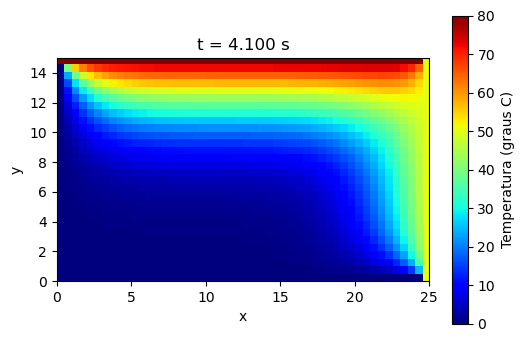

8.4 EDPs Parabólicas#
Equações parabólicas descrevem processos de difusão que evoluem no tempo: a condução de calor em uma barra, a dispersão de um poluente em um canal, a passagem de uma substância através de uma membrana. O modelo mais simples é a equação do calor unidimensional
em que \(u(x,t)\) é a temperatura no ponto \(x\) de uma barra de comprimento \(L\), no instante \(t\), e \(\alpha>0\) é a difusividade térmica do material. Escrevendo a Eq. (1) na forma geral da Seção 8.2, com \(t\) no papel de \(y\), temos \(A=\alpha\) e \(B=C=0\), de modo que \(B^2-4AC=0\): é o caso parabólico.
Ao contrário do que acontece no caso elíptico, aqui a solução não fica determinada apenas pelos valores na fronteira: precisamos também do estado inicial. Um problema bem posto para a Eq. (1) é formado por uma condição inicial e por uma condição em cada extremidade da barra, por exemplo
Quando \(g_0\) e \(g_L\) são constantes, a solução tende, para \(t\to\infty\), a um estado estacionário: a solução da equação de Laplace em uma dimensão, que é a reta que liga os valores impostos nas extremidades.
A difusividade \(\alpha=k/(\rho c)\) combina a condutividade térmica \(k\), a densidade \(\rho\) e o calor específico \(c\) do material, e mede a rapidez com que uma variação de temperatura se espalha. Alguns valores aproximados, à temperatura ambiente:
Material |
\(\alpha\) (cm²/s) |
|---|---|
Cobre |
1,17 |
Alumínio |
0,97 |
Ferro |
0,23 |
Aço carbono |
0,19 |
Aço inoxidável |
0,04 |
Madeira (pinho) |
0,0017 |
Água |
0,0015 |
O cobre espalha calor cerca de 700 vezes mais depressa que a madeira. Como \(\alpha\) tem dimensão de comprimento² por tempo, o tempo característico para que o calor atravesse uma distância \(\ell\) é da ordem de \(\ell^2/\alpha\): dobrar a espessura de uma parede multiplica esse tempo por quatro.
Discretização no espaço: o método das linhas#
Dividimos \([0,L]\) em \(n_x\) subintervalos de comprimento \(\Delta x=L/n_x\), com nós \(x_i=i\,\Delta x\), e denotamos por \(v_i(t)\) uma aproximação de \(u(x_i,t)\). Nos nós internos, substituímos a derivada segunda em \(x\) pela diferença central, como na Seção 8.3, mas mantemos o tempo contínuo:
com \(v_0(t)=g_0(t)\) e \(v_{n_x}(t)=g_L(t)\). Reunindo as incógnitas no vetor \(\mathbf{v}=(v_1,\ldots,v_{n_x-1})^T\), as Eqs. (3) formam um sistema de equações diferenciais ordinárias
em que \(K\) é a matriz tridiagonal de ordem \(n_x-1\) com \(-2\) na diagonal e \(1\) nas diagonais vizinhas (a mesma matriz de segunda diferença da Seção 8.3), e \(\mathbf{c}(t)=(g_0(t),0,\ldots,0,g_L(t))^T\) traz os valores de fronteira. Cada componente \(v_i(t)\) descreve a temperatura ao longo da reta vertical \(x=x_i\) do plano \((x,t)\), daí o nome método das linhas.
A Eq. (4) é um problema de valor inicial, com \(\mathbf{v}(0)\) dado pelos valores de \(u_0\) nos nós internos, e pode ser resolvida com os métodos do Capítulo 7. Com um passo \(\Delta t\) e \(t_n=n\,\Delta t\), escrevemos \(u_i^n\approx u(x_i,t_n)\) e \(\mathbf{u}^n\) para o vetor dos valores internos. Cada método para EDOs dá origem a um esquema para a equação do calor.
O método explícito#
Aplicando o método de Euler explícito à Eq. (4) e escrevendo o resultado componente a componente, obtemos
O valor em cada nó no novo instante é calculado diretamente a partir dos valores do instante anterior, sem resolver nenhum sistema; por isso o método é chamado explícito. O parâmetro adimensional \(r\) compara o passo de tempo com o tempo de difusão através de uma célula da malha e, como veremos, controla a estabilidade do método. O erro de truncamento é de primeira ordem no tempo e de segunda ordem no espaço, \(O(\Delta t+\Delta x^2)\).
Forma matricial do método explícito#
O algoritmo explícito admite uma formulação matricial compacta. Definindo o vetor solução no instante \(t_n\):
a equação de propagação \(u_i^{n+1} = r\,(u_{i+1}^n + u_{i-1}^n) + (1-2r)\,u_i^n\) torna-se uma única multiplicação de matrizes:
A matriz de propagação \(\mathbf{B}\) é tridiagonal:
As linhas da fronteira preservam os valores das condições de Dirichlet. Esta perspectiva revela que o critério de estabilidade \(r \leq 1/2\) é equivalente a exigir que todos os autovalores de \(\mathbf{B}\) tenham módulo \(\leq 1\).
Exemplo 8.4.1: Equação de difusão com solução exata
Solução exata: \(u(x,t) = e^{-\pi^2 D t/L^2}\sin(\pi x/L)\)
Vamos construir \(\mathbf{B}\) explicitamente e comparar a propagação numérica com a solução de referência.
import numpy as np
import matplotlib.pyplot as plt
L = 1.0
D = 0.1
hx = 0.05
ht = 0.0125
r = D * ht / hx**2
print(f"r = {r:.4f} (criterio de estabilidade: r <= 0.5)")
x = np.linspace(0, L, int(L/hx) + 1)
u0 = np.sin(np.pi * x / L)
# Monta a matriz de propagação B
N = len(x)
B = np.eye(N)
for i in range(1, N - 1):
B[i, i-1] = r
B[i, i] = 1 - 2*r
B[i, i+1] = r
# Propaga e armazena
n_steps = 480
sol = np.zeros((n_steps + 1, N))
sol[0] = u0
for n in range(n_steps):
sol[n+1] = B @ sol[n]
# Solução exata
sol_ex = lambda x, t: np.exp(-np.pi**2 * D * t / L**2) * np.sin(np.pi * x / L)
fig, ax = plt.subplots(figsize=(6, 3))
for n in [200, 350, 480]:
t_n = n * ht
ax.plot(x, sol[n], label=f't = {t_n:.2f} s')
ax.plot(x, sol_ex(x, t_n), 'k--', lw=0.8)
ax.plot([], [], 'k--', label='Solucao exata')
ax.set_xlabel('x')
ax.set_ylabel('u(x, t)')
ax.set_title('Propagacao matricial vs. solucao exata (tracejado)')
ax.legend()
ax.grid(True)
plt.tight_layout()
plt.show()
r = 0.5000 (criterio de estabilidade: r <= 0.5)

Experimento de instabilidade: aumente ht para 0.013 (\(r \approx 0{,}52 > 1/2\)) e execute novamente para observar a divergência da solução.
Estabilidade#
O experimento acima mostra que o método explícito pode produzir oscilações que crescem sem controle quando \(r\) passa de \(1/2\). Para entender por quê, consideremos a Eq. (4) com fronteiras nulas (\(g_0=g_L=0\)). Os autovalores e autovetores da matriz \(K\) são conhecidos explicitamente:
como se verifica calculando \(K\mathbf{w}_m\) com a identidade \(\sin(\theta(i-1))+\sin(\theta(i+1))=2\cos\theta\,\sin(\theta i)\). Os autovetores são as versões discretas dos modos de Fourier \(\sin(m\pi x/L)\) da Seção 8.1, e todos os autovalores estão no intervalo \((-4,0)\).
Se escrevermos \(\mathbf{u}^0\) como combinação dos autovetores \(\mathbf{w}_m\), cada modo evolui de forma independente. No método explícito, \(\mathbf{u}^{n+1}=(I+rK)\,\mathbf{u}^n\), e o modo \(m\) é multiplicado, a cada passo, pelo fator de amplificação
Na solução exata todos os modos decaem; para que o mesmo aconteça na solução numérica, é preciso que \(|G_m|\leq 1\) para todo \(m\). O modo mais oscilante, \(m=n_x-1\), tem \(\sin^2(m\pi/2n_x)\) muito próximo de 1, e a exigência se torna \(1-4r\geq -1\), isto é,
(Como \(\sin^2(m\pi/2n_x)\) nunca chega exatamente a 1, em uma malha fixa o limite verdadeiro fica um pouco acima de \(1/2\), mas ele se aproxima de \(1/2\) à medida que a malha é refinada.)
A condição (6) é bastante restritiva: se reduzirmos \(\Delta x\) à metade para ganhar precisão, o passo \(\Delta t\) precisa ser dividido por 4, e o número total de operações cresce por um fator 8.
Métodos implícitos: Euler implícito e Crank-Nicolson#
Para escapar da restrição (6), usamos métodos implícitos. O método de Euler implícito avalia o lado direito da Eq. (4) no novo instante \(t_{n+1}\):
Em cada nó interno, isso corresponde à equação
Agora os valores no novo instante aparecem acoplados, e a cada passo é preciso resolver um sistema linear tridiagonal. Em troca, o fator de amplificação do modo \(m\),
está no intervalo \((0,1]\) para qualquer \(r>0\): o método é incondicionalmente estável. Ele continua, porém, sendo de primeira ordem no tempo, com erro \(O(\Delta t+\Delta x^2)\).
O método de Crank-Nicolson corresponde a aplicar à Eq. (4) a regra do trapézio, isto é, a usar a média dos lados direitos nos instantes \(t_n\) e \(t_{n+1}\):
Como a regra do trapézio é de segunda ordem, o erro passa a ser \(O(\Delta t^2+\Delta x^2)\). O fator de amplificação
também satisfaz \(|G_m|\leq 1\) para todo \(r>0\). Observe, no entanto, que para \(r\) grande os modos mais oscilantes têm \(G_m\) próximo de \(-1\): eles não crescem, mas são amortecidos lentamente e trocam de sinal a cada passo. Isso pode produzir pequenas oscilações espúrias quando a condição inicial tem descontinuidades.
Uma rotina para os três métodos#
Os três esquemas cabem em uma única fórmula, conhecida como método θ:
com \(\theta=0\) para o método explícito, \(\theta=1\) para o Euler implícito e \(\theta=1/2\) para o Crank-Nicolson. A rotina calor_1d() implementa a Eq. (9). Como a matriz do lado esquerdo não muda de um passo para o outro, ela é fatorada uma única vez com a decomposição LU esparsa (splu), e cada passo custa apenas duas substituições triangulares; é o mesmo princípio discutido na Seção 3.2. No método explícito essa matriz é a identidade e a resolução é imediata. O argumento direita permite trocar a condição de Dirichlet na extremidade \(x=L\) por uma condição de Neumann, como veremos adiante.
import numpy as np
import matplotlib.pyplot as plt
import scipy.sparse as sp
import scipy.sparse.linalg as spla
def calor_1d(alpha, L, T, u0, g0, gL, nx, nt, metodo='crank-nicolson',
direita='dirichlet'):
"""
Resolve u_t = alpha*u_xx em 0 < x < L, 0 < t <= T, pelo método theta.
u0(x) : condição inicial
g0(t) : valor de u em x = 0
gL(t) : valor de u em x = L (direita='dirichlet') ou
valor de u_x em x = L (direita='neumann')
metodo : 'explicito', 'implicito' ou 'crank-nicolson'
Retorna x, t e a matriz U, com U[n, i] ~ u(x[i], t[n]).
"""
theta = {'explicito': 0.0, 'implicito': 1.0, 'crank-nicolson': 0.5}[metodo]
x = np.linspace(0, L, nx + 1)
t = np.linspace(0, T, nt + 1)
dx, dt = x[1] - x[0], t[1] - t[0]
r = alpha * dt / dx**2
# incógnitas: nós 1..nx-1 (Dirichlet) ou 1..nx (Neumann em x = L)
m = nx - 1 if direita == 'dirichlet' else nx
K = sp.diags([1, -2, 1], [-1, 0, 1], shape=(m, m), format='lil')
if direita == 'neumann':
K[-1, -2] = 2 # nó fictício eliminado
K = K.tocsc()
I = sp.identity(m, format='csc')
def c(tn):
# termos de fronteira da Eq. (4)
v = np.zeros(m)
v[0] = g0(tn)
v[-1] += gL(tn) if direita == 'dirichlet' else 2 * dx * gL(tn)
return v
lu = spla.splu((I - theta * r * K).tocsc()) # fatorada uma única vez
B = I + (1 - theta) * r * K
U = np.zeros((nt + 1, nx + 1))
U[0] = u0(x)
u = U[0, 1:m + 1].copy()
for n in range(nt):
b = B @ u + r * (theta * c(t[n + 1]) + (1 - theta) * c(t[n]))
u = lu.solve(b)
U[n + 1, 1:m + 1] = u
U[n + 1, 0] = g0(t[n + 1])
if direita == 'dirichlet':
U[n + 1, -1] = gL(t[n + 1])
return x, t, U
Exemplo 8.4.2: Comparação dos três métodos
Considere a equação \(u_t=u_{xx}\) em \(0<x<1\), com \(u(0,t)=u(1,t)=0\) e condição inicial
Como vimos na Seção 8.1, cada modo de Fourier decai de forma independente, e a solução exata é
Vamos calcular a solução no instante \(T=0{,}1\) refinando a malha no espaço e no tempo ao mesmo tempo, com \(\Delta t\) proporcional a \(\Delta x\) (tomamos \(n_t=2n_x\)), e medir o erro máximo em \(t=T\) para cada método.
u_exata = lambda x, t: (np.exp(-np.pi**2*t)*np.sin(np.pi*x)
+ 0.3*np.exp(-16*np.pi**2*t)*np.sin(4*np.pi*x))
u0 = lambda x: u_exata(x, 0)
zero = lambda t: 0.0
T = 0.1
for metodo in ['explicito', 'implicito', 'crank-nicolson']:
print(f"Método {metodo}")
print(f"{'nx':>5} {'nt':>5} {'r':>6} {'erro máximo':>13} {'razão':>7}")
erro_ant = None
for nx in [10, 20, 40, 80]:
nt = 2 * nx
x, t, U = calor_1d(1.0, 1.0, T, u0, zero, zero, nx, nt, metodo)
erro = np.max(np.abs(U[-1] - u_exata(x, T)))
razao = f"{erro_ant/erro:7.2f}" if erro_ant else ""
print(f"{nx:5d} {nt:5d} {T/nt*nx**2:6.2f} {erro:13.3e} {razao}")
erro_ant = erro
print()
Método explicito
nx nt r erro máximo razão
10 20 0.50 6.164e-03
20 40 1.00 1.948e+02 0.00
40 80 2.00 8.187e+50 0.00
80 160 4.00 7.518e+171 0.00
Método implicito
nx nt r erro máximo razão
10 20 0.50 1.185e-02
20 40 1.00 5.239e-03 2.26
40 80 2.00 2.445e-03 2.14
80 160 4.00 1.179e-03 2.07
Método crank-nicolson
nx nt r erro máximo razão
10 20 0.50 2.954e-03
20 40 1.00 7.379e-04 4.00
40 80 2.00 1.844e-04 4.00
80 160 4.00 4.611e-05 4.00
x, t, U = calor_1d(1.0, 1.0, T, u0, zero, zero, 40, 80, 'crank-nicolson')
xf = np.linspace(0, 1, 200)
fig, ax = plt.subplots(figsize=(6, 3.5))
for tn in [0, 0.005, 0.02, 0.1]:
n = int(round(tn / (t[1] - t[0])))
linha, = ax.plot(x, U[n], 'o', markersize=3)
ax.plot(xf, u_exata(xf, tn), '-', color=linha.get_color(), label=f't = {tn}')
ax.set_xlabel('x')
ax.set_ylabel('u(x, t)')
ax.set_title('Crank-Nicolson (pontos) e solução exata (linhas)')
ax.legend()
ax.grid(True)
plt.tight_layout()
plt.show()

Com \(\Delta t\) proporcional a \(\Delta x\), o parâmetro \(r\) dobra a cada refinamento. O método explícito só funciona na malha mais grosseira, em que \(r=0{,}5\); a partir daí a condição (6) é violada e a solução explode. Os dois métodos implícitos permanecem estáveis em todas as malhas. No Euler implícito o erro cai aproximadamente pela metade a cada refinamento, porque o termo \(O(\Delta t)\) domina; no Crank-Nicolson ele cai por 4, o que confirma a segunda ordem no tempo e no espaço. Para obter com o método explícito a mesma precisão do Crank-Nicolson na malha mais fina, seria preciso usar \(\Delta t\leq\Delta x^2/2\), isto é, mais de 1200 passos de tempo em vez de 160.
O gráfico mostra também o comportamento típico da difusão: o modo \(\sin(4\pi x)\), mais oscilante, decai \(16\) vezes mais depressa que o modo \(\sin(\pi x)\) e praticamente desaparece antes de \(t=0{,}05\).
Condição de contorno de Neumann#
Em muitos problemas, o que se conhece em uma extremidade é o fluxo de calor, e não a temperatura. Pela lei de Fourier, o fluxo é proporcional a \(-\partial u/\partial x\); uma extremidade isolada corresponde, portanto, a \(u_x(L,t)=0\) e, de modo geral, podemos ter \(u_x(L,t)=q(t)\). Nesse caso, \(u\) em \(x=L\) deixa de ser conhecido e passa a ser uma incógnita.
Para escrever a Eq. (3) no nó \(i=n_x\), precisamos do vizinho \(v_{n_x+1}\), que está fora do domínio. Introduzimos então um nó fictício em \(x_{n_x+1}=L+\Delta x\) e aproximamos a derivada na fronteira pela diferença central:
Substituindo na Eq. (3) com \(i=n_x\), o nó fictício desaparece:
O sistema (4) ganha uma incógnita: a matriz \(K\) passa a ter ordem \(n_x\), com a última linha igual a \((0,\ldots,0,2,-2)\), e a última componente de \(\mathbf{c}(t)\) passa a ser \(2\Delta x\,q(t)\). Como a derivada foi aproximada por diferença central, a precisão de segunda ordem no espaço é mantida. Na rotina calor_1d(), essa opção é ativada com direita='neumann', e a função gL passa a fornecer \(q(t)\).
Exemplo 8.4.3: Barra com uma extremidade isolada
Uma barra de comprimento \(L=1\), com \(\alpha=1\), tem a extremidade \(x=0\) mantida a temperatura zero e a extremidade \(x=1\) isolada, isto é, \(u(0,t)=0\) e \(u_x(1,t)=0\). A temperatura inicial é \(u(x,0)=\sin(\pi x/2)\), que já satisfaz as duas condições de contorno. Nesse caso a solução exata é
Vamos resolver o problema até \(T=0{,}5\) com o método de Crank-Nicolson e verificar a ordem de convergência.
u_exata2 = lambda x, t: np.exp(-np.pi**2*t/4)*np.sin(np.pi*x/2)
T2 = 0.5
erro_ant = None
for nx in [10, 20, 40, 80]:
x, t, U = calor_1d(1.0, 1.0, T2, lambda x: u_exata2(x, 0), zero, zero,
nx, 4*nx, 'crank-nicolson', direita='neumann')
erro = np.max(np.abs(U[-1] - u_exata2(x, T2)))
razao = f" razão = {erro_ant/erro:.2f}" if erro_ant else ""
print(f"nx = {nx:3d} erro máximo = {erro:.3e}{razao}")
erro_ant = erro
fig, ax = plt.subplots(figsize=(6, 3.5))
for tn in [0, 0.1, 0.25, 0.5]:
n = int(round(tn / (t[1] - t[0])))
ax.plot(x, U[n], label=f't = {tn}')
ax.set_xlabel('x')
ax.set_ylabel('u(x, t)')
ax.set_title('Extremidade x = 1 isolada')
ax.legend()
ax.grid(True)
plt.tight_layout()
plt.show()
nx = 10 erro máximo = 7.107e-04
nx = 20 erro máximo = 1.776e-04 razão = 4.00
nx = 40 erro máximo = 4.439e-05 razão = 4.00
nx = 80 erro máximo = 1.110e-05 razão = 4.00

O erro diminui por um fator 4 a cada refinamento, como no caso de Dirichlet. No gráfico, todos os perfis chegam à extremidade \(x=1\) com tangente horizontal: como não há fluxo através dela, o calor só pode deixar a barra pela extremidade \(x=0\).
Equação do calor 2D (transiente)#
A extensão da equação do calor para domínios bidimensionais é
Usando diferenças finitas centrais no espaço e progressivas no tempo, com \(\Delta x = \Delta y = h\), a equação de diferenças é
A condição de estabilidade para o caso 2D é mais restritiva que no caso 1D: \(\gamma \leq 1/4\).
Exemplo 8.4.4: Placa retangular com aquecimento nas bordas
Placa de \(50 \times 30\) unidades, temperatura inicial nula em toda a região interior. Condições de contorno constantes: borda superior a \(80\,°C\), borda direita a \(50\,°C\), bordas esquerda e inferior a \(0\,°C\).
Parâmetros: \(\alpha = 2\), \(h = 0{,}5\), \(\Delta t = 0{,}01\) s \(\Rightarrow\) \(\gamma = 0{,}08 < 0{,}25\) (estável).
import numpy as np
import matplotlib.pyplot as plt
import matplotlib.animation as animation
xmax, ymax = 50, 30
kmax = 500
alpha = 2.0
h = 0.5
ht = 0.01
gamma = alpha * ht / h**2
print(f"gamma = {gamma:.4f} (criterio 2D: gamma <= 0.25)")
u = np.zeros((kmax, ymax, xmax))
u[:, -1, :] = 80.0
u[:, :, -1] = 50.0
for k in range(kmax - 1):
u[k+1, 1:-1, 1:-1] = (
gamma * (
u[k, 2:, 1:-1] + u[k, :-2, 1:-1]
+ u[k, 1:-1, 2:] + u[k, 1:-1, :-2]
- 4 * u[k, 1:-1, 1:-1]
)
+ u[k, 1:-1, 1:-1]
)
u[k+1, -1, :] = 80.0
u[k+1, :, -1] = 50.0
fig, axes = plt.subplots(1, 3, figsize=(13, 3.5))
for ax, k in zip(axes, [0, kmax//2, kmax-1]):
im = ax.imshow(u[k], cmap='jet', vmin=0, vmax=80, origin='lower',
extent=[0, xmax*h, 0, ymax*h])
ax.set_title(f't = {k*ht:.2f} s')
ax.set_xlabel('x')
ax.set_ylabel('y')
plt.colorbar(im, ax=ax, fraction=0.046)
plt.suptitle('Distribuicao de temperatura — equacao do calor 2D')
plt.tight_layout()
plt.show()
gamma = 0.0800 (criterio 2D: gamma <= 0.25)

# Animação da evolução temporal
fig, ax = plt.subplots(figsize=(6, 4))
im = ax.imshow(u[0], cmap='jet', vmin=0, vmax=80, origin='lower',
extent=[0, xmax*h, 0, ymax*h])
plt.colorbar(im, ax=ax, label='Temperatura (graus C)')
ax.set_xlabel('x')
ax.set_ylabel('y')
def _animate(k):
im.set_array(u[k])
ax.set_title(f't = {k*ht:.3f} s')
return [im]
anim = animation.FuncAnimation(fig, _animate, frames=kmax,
interval=30, blit=True, repeat=False)
from IPython.display import HTML
HTML(anim.to_jshtml())
---------------------------------------------------------------------------
KeyboardInterrupt Traceback (most recent call last)
Cell In[8], line 17
14 anim = animation.FuncAnimation(fig, _animate, frames=kmax,
15 interval=30, blit=True, repeat=False)
16 from IPython.display import HTML
---> 17 HTML(anim.to_jshtml())
File ~/anaconda3/lib/python3.12/site-packages/matplotlib/animation.py:1353, in Animation.to_jshtml(self, fps, embed_frames, default_mode)
1349 path = Path(tmpdir, "temp.html")
1350 writer = HTMLWriter(fps=fps,
1351 embed_frames=embed_frames,
1352 default_mode=default_mode)
-> 1353 self.save(str(path), writer=writer)
1354 self._html_representation = path.read_text()
1356 return self._html_representation
File ~/anaconda3/lib/python3.12/site-packages/matplotlib/animation.py:1109, in Animation.save(self, filename, writer, fps, dpi, codec, bitrate, extra_args, metadata, extra_anim, savefig_kwargs, progress_callback)
1107 progress_callback(frame_number, total_frames)
1108 frame_number += 1
-> 1109 writer.grab_frame(**savefig_kwargs)
File ~/anaconda3/lib/python3.12/site-packages/matplotlib/animation.py:775, in HTMLWriter.grab_frame(self, **savefig_kwargs)
773 return
774 f = BytesIO()
--> 775 self.fig.savefig(f, format=self.frame_format,
776 dpi=self.dpi, **savefig_kwargs)
777 imgdata64 = base64.encodebytes(f.getvalue()).decode('ascii')
778 self._total_bytes += len(imgdata64)
File ~/anaconda3/lib/python3.12/site-packages/matplotlib/figure.py:3390, in Figure.savefig(self, fname, transparent, **kwargs)
3388 for ax in self.axes:
3389 _recursively_make_axes_transparent(stack, ax)
-> 3390 self.canvas.print_figure(fname, **kwargs)
File ~/anaconda3/lib/python3.12/site-packages/matplotlib/backend_bases.py:2193, in FigureCanvasBase.print_figure(self, filename, dpi, facecolor, edgecolor, orientation, format, bbox_inches, pad_inches, bbox_extra_artists, backend, **kwargs)
2189 try:
2190 # _get_renderer may change the figure dpi (as vector formats
2191 # force the figure dpi to 72), so we need to set it again here.
2192 with cbook._setattr_cm(self.figure, dpi=dpi):
-> 2193 result = print_method(
2194 filename,
2195 facecolor=facecolor,
2196 edgecolor=edgecolor,
2197 orientation=orientation,
2198 bbox_inches_restore=_bbox_inches_restore,
2199 **kwargs)
2200 finally:
2201 if bbox_inches and restore_bbox:
File ~/anaconda3/lib/python3.12/site-packages/matplotlib/backend_bases.py:2043, in FigureCanvasBase._switch_canvas_and_return_print_method.<locals>.<lambda>(*args, **kwargs)
2039 optional_kws = { # Passed by print_figure for other renderers.
2040 "dpi", "facecolor", "edgecolor", "orientation",
2041 "bbox_inches_restore"}
2042 skip = optional_kws - {*inspect.signature(meth).parameters}
-> 2043 print_method = functools.wraps(meth)(lambda *args, **kwargs: meth(
2044 *args, **{k: v for k, v in kwargs.items() if k not in skip}))
2045 else: # Let third-parties do as they see fit.
2046 print_method = meth
File ~/anaconda3/lib/python3.12/site-packages/matplotlib/backends/backend_agg.py:497, in FigureCanvasAgg.print_png(self, filename_or_obj, metadata, pil_kwargs)
450 def print_png(self, filename_or_obj, *, metadata=None, pil_kwargs=None):
451 """
452 Write the figure to a PNG file.
453
(...)
495 *metadata*, including the default 'Software' key.
496 """
--> 497 self._print_pil(filename_or_obj, "png", pil_kwargs, metadata)
File ~/anaconda3/lib/python3.12/site-packages/matplotlib/backends/backend_agg.py:445, in FigureCanvasAgg._print_pil(self, filename_or_obj, fmt, pil_kwargs, metadata)
440 def _print_pil(self, filename_or_obj, fmt, pil_kwargs, metadata=None):
441 """
442 Draw the canvas, then save it using `.image.imsave` (to which
443 *pil_kwargs* and *metadata* are forwarded).
444 """
--> 445 FigureCanvasAgg.draw(self)
446 mpl.image.imsave(
447 filename_or_obj, self.buffer_rgba(), format=fmt, origin="upper",
448 dpi=self.figure.dpi, metadata=metadata, pil_kwargs=pil_kwargs)
File ~/anaconda3/lib/python3.12/site-packages/matplotlib/backends/backend_agg.py:388, in FigureCanvasAgg.draw(self)
385 # Acquire a lock on the shared font cache.
386 with (self.toolbar._wait_cursor_for_draw_cm() if self.toolbar
387 else nullcontext()):
--> 388 self.figure.draw(self.renderer)
389 # A GUI class may be need to update a window using this draw, so
390 # don't forget to call the superclass.
391 super().draw()
File ~/anaconda3/lib/python3.12/site-packages/matplotlib/artist.py:95, in _finalize_rasterization.<locals>.draw_wrapper(artist, renderer, *args, **kwargs)
93 @wraps(draw)
94 def draw_wrapper(artist, renderer, *args, **kwargs):
---> 95 result = draw(artist, renderer, *args, **kwargs)
96 if renderer._rasterizing:
97 renderer.stop_rasterizing()
File ~/anaconda3/lib/python3.12/site-packages/matplotlib/artist.py:72, in allow_rasterization.<locals>.draw_wrapper(artist, renderer)
69 if artist.get_agg_filter() is not None:
70 renderer.start_filter()
---> 72 return draw(artist, renderer)
73 finally:
74 if artist.get_agg_filter() is not None:
File ~/anaconda3/lib/python3.12/site-packages/matplotlib/figure.py:3154, in Figure.draw(self, renderer)
3151 # ValueError can occur when resizing a window.
3153 self.patch.draw(renderer)
-> 3154 mimage._draw_list_compositing_images(
3155 renderer, self, artists, self.suppressComposite)
3157 for sfig in self.subfigs:
3158 sfig.draw(renderer)
File ~/anaconda3/lib/python3.12/site-packages/matplotlib/image.py:132, in _draw_list_compositing_images(renderer, parent, artists, suppress_composite)
130 if not_composite or not has_images:
131 for a in artists:
--> 132 a.draw(renderer)
133 else:
134 # Composite any adjacent images together
135 image_group = []
File ~/anaconda3/lib/python3.12/site-packages/matplotlib/artist.py:72, in allow_rasterization.<locals>.draw_wrapper(artist, renderer)
69 if artist.get_agg_filter() is not None:
70 renderer.start_filter()
---> 72 return draw(artist, renderer)
73 finally:
74 if artist.get_agg_filter() is not None:
File ~/anaconda3/lib/python3.12/site-packages/matplotlib/axes/_base.py:3070, in _AxesBase.draw(self, renderer)
3067 if artists_rasterized:
3068 _draw_rasterized(self.figure, artists_rasterized, renderer)
-> 3070 mimage._draw_list_compositing_images(
3071 renderer, self, artists, self.figure.suppressComposite)
3073 renderer.close_group('axes')
3074 self.stale = False
File ~/anaconda3/lib/python3.12/site-packages/matplotlib/image.py:132, in _draw_list_compositing_images(renderer, parent, artists, suppress_composite)
130 if not_composite or not has_images:
131 for a in artists:
--> 132 a.draw(renderer)
133 else:
134 # Composite any adjacent images together
135 image_group = []
File ~/anaconda3/lib/python3.12/site-packages/matplotlib/artist.py:72, in allow_rasterization.<locals>.draw_wrapper(artist, renderer)
69 if artist.get_agg_filter() is not None:
70 renderer.start_filter()
---> 72 return draw(artist, renderer)
73 finally:
74 if artist.get_agg_filter() is not None:
File ~/anaconda3/lib/python3.12/site-packages/matplotlib/axis.py:1391, in Axis.draw(self, renderer, *args, **kwargs)
1388 tlb1, tlb2 = self._get_ticklabel_bboxes(ticks_to_draw, renderer)
1390 for tick in ticks_to_draw:
-> 1391 tick.draw(renderer)
1393 # Shift label away from axes to avoid overlapping ticklabels.
1394 self._update_label_position(renderer)
File ~/anaconda3/lib/python3.12/site-packages/matplotlib/artist.py:72, in allow_rasterization.<locals>.draw_wrapper(artist, renderer)
69 if artist.get_agg_filter() is not None:
70 renderer.start_filter()
---> 72 return draw(artist, renderer)
73 finally:
74 if artist.get_agg_filter() is not None:
File ~/anaconda3/lib/python3.12/site-packages/matplotlib/axis.py:295, in Tick.draw(self, renderer)
292 renderer.open_group(self.__name__, gid=self.get_gid())
293 for artist in [self.gridline, self.tick1line, self.tick2line,
294 self.label1, self.label2]:
--> 295 artist.draw(renderer)
296 renderer.close_group(self.__name__)
297 self.stale = False
File ~/anaconda3/lib/python3.12/site-packages/matplotlib/artist.py:72, in allow_rasterization.<locals>.draw_wrapper(artist, renderer)
69 if artist.get_agg_filter() is not None:
70 renderer.start_filter()
---> 72 return draw(artist, renderer)
73 finally:
74 if artist.get_agg_filter() is not None:
File ~/anaconda3/lib/python3.12/site-packages/matplotlib/text.py:748, in Text.draw(self, renderer)
745 renderer.open_group('text', self.get_gid())
747 with self._cm_set(text=self._get_wrapped_text()):
--> 748 bbox, info, descent = self._get_layout(renderer)
749 trans = self.get_transform()
751 # don't use self.get_position here, which refers to text
752 # position in Text:
File ~/anaconda3/lib/python3.12/site-packages/matplotlib/text.py:442, in Text._get_layout(self, renderer)
440 corners_rotated = M.transform(corners_horiz)
441 # compute the bounds of the rotated box
--> 442 xmin = corners_rotated[:, 0].min()
443 xmax = corners_rotated[:, 0].max()
444 ymin = corners_rotated[:, 1].min()
File ~/.local/lib/python3.12/site-packages/numpy/core/_methods.py:45, in _amin(a, axis, out, keepdims, initial, where)
43 def _amin(a, axis=None, out=None, keepdims=False,
44 initial=_NoValue, where=True):
---> 45 return umr_minimum(a, axis, None, out, keepdims, initial, where)
KeyboardInterrupt:

Exercícios#
Use a rotina calor_1d() para resolver os problemas a seguir.
(a) Considere a equação \(u_t=u_{xx}\) em \(0<x<1\), com \(u(0,t)=0\), \(u(1,t)=1\) e \(u(x,0)=x^3\).
(i) Com \(n_x=20\) e \(T=0{,}2\), use o método explícito com \(n_t=100\), \(150\), \(160\) e \(200\). Calcule \(r\) em cada caso e verifique se a solução é estável. Os resultados estão de acordo com a condição (6)?
(ii) Resolva o mesmo problema com o método de Crank-Nicolson e apenas \(n_t=20\). Qual é o valor de \(r\)? A solução é estável? Ela é precisa? Para responder, compare-a com a solução obtida com \(n_t=2000\).
(iii) Quando \(t\to\infty\), a solução tende a um estado estacionário. Qual é ele? Verifique numericamente usando \(T=2\).
(b) Resolva o problema de condução de calor
Use \(\alpha=1/4\), já que a equação equivale a \(u_t=\tfrac{1}{4}u_{xx}\). Compare com a solução exata \(u(x,t) = 2\,e^{-\pi^2 t/16}\operatorname{sen}(\pi x/2) - e^{-\pi^2 t/4}\operatorname{sen}(\pi x) + 4\,e^{-\pi^2 t}\operatorname{sen}(2\pi x)\).
Problemas adicionais — Barra de 40 cm (Fonte: Boyce e DiPrima, 2024)
Extremidades mantidas a \(0\,°C\), \(\alpha^2 = 1\). Para cada condição inicial abaixo, resolva numericamente com os três métodos e construa o gráfico de \(u(x,t)\) para alguns instantes de tempo.
(c) \(u(x,0) = 50, \quad 0 < x < 40\)
(d) \(u(x,0) = \begin{cases} x, & 0 \leq x < 20 \\ 40-x, & 20 \leq x \leq 40 \end{cases}\)
(e) \(u(x,0) = \begin{cases} 0, & 0 \leq x < 10 \\ 50, & 10 \leq x \leq 30 \\ 0, & 30 < x \leq 40 \end{cases}\)
(f) \(u(x,0) = x, \quad 0 \leq x < 40\)
Análise de convergência
(g) Considere a barra do Problema (c). Para \(t = 5\) e \(x = 20\), determine quantos termos da série de Fourier são necessários para que a inclusão de mais um termo não altere as três primeiras casas decimais de \(u(20,5)\). Repita para \(t = 20\) e \(t = 80\). O que se conclui sobre a velocidade de convergência?
(h) Repita o Problema (g) para a barra do Problema (d).
(i) Repita o Problema (g) para a barra do Problema (e).
(j) Repita o Problema (g) para a barra do Problema (f).